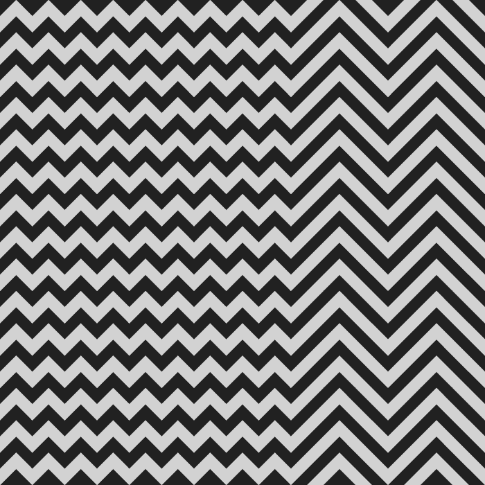
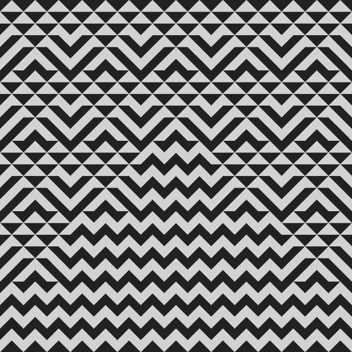

*
*
*
*
Digital Art | Since 2015
Intro
The Cyberborea project is dedicated to various aspects of the expansion and transformation of human reality through new technologies. The name of the project goes back to the legendary country of Hyperborea, which ancient authors believed to exist in the border (northern, 'beyond Boreas') regions of Oikoumene. The imagination of the Greeks endowed these lands with utopian and miraculous features, where people do not feel need, are not burdened by work and do not suffer from diseases. Their life is filled with art and they do not die until they themselves want it. Cyberborea is a territory of a quite probable future, where the way of life of the Hyperboreans can be embodied.
Artworks
Reefs ..................................................
Clouds .................................................
OverWorld ..............................................
MetaLand ...............................................
SnowFlakes .............................................
CosmoGlitch ............................................
OverGame ...............................................
CybOrgy ................................................
Reefs
 
Surf
Stairs
Mountain
Fish
Mouse
Wolf
Plus
Medusa
KeyReefs (from the Old Norse 'rif' — rib, edge) is a special border area between the ocean and land, which is above/under-water elevations of the seabed, which have a specific structure, material composition and a specific role in the evolutionary processes of geo-biological systems. The dual function of reefs is to provide the interaction of geographic environments through the filtration of suspension entering the ocean from the continental coastal zone (reflection), as well as in dissipating the wave transgression of the sea in relation to the coastline (protection). At the same time, the reef ecosystem has a very high degree of autonomy and depends mainly on lighting.
Reefs, Riphean mountains — a key topographic landmark and at the same time an obstacle on the way to Hyperborea. Reefs are mentioned by numerous ancient authors, especially in the era of late Hellenism. At this time, Reefs become an exclusively speculative object, located only in the space of mythopoetic imagination and lose their clear geographical localization. At the same time, having entered the topic of the Hyperborean myth, the Reefs invariably and persistently direct our attention to the most remote northern frontier of Oikoumene, adjoining directly on the Ocean.Links
........................................................
........................................................
.................... cyberborea.eth ....................
................... cyberborea.crypto ..................
.................... cyberborea.net ....................
........................................................
........................................................